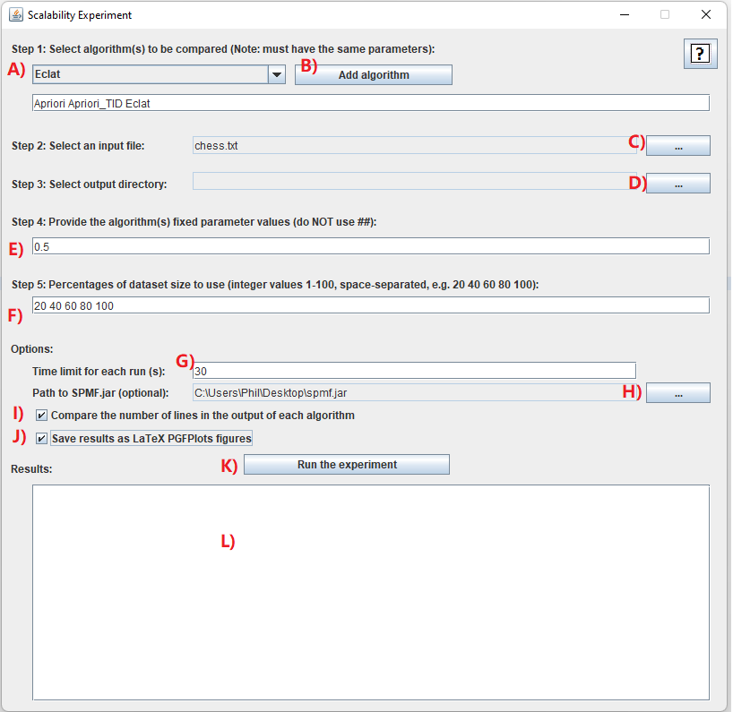
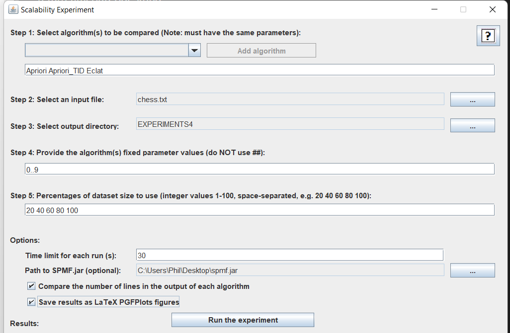
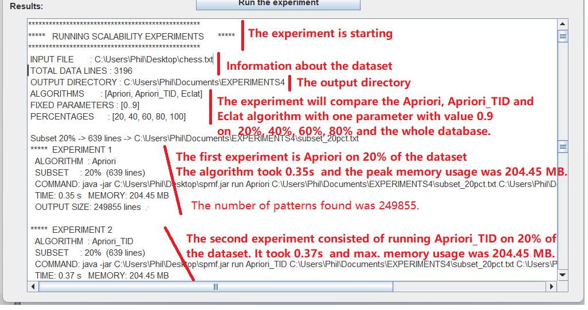
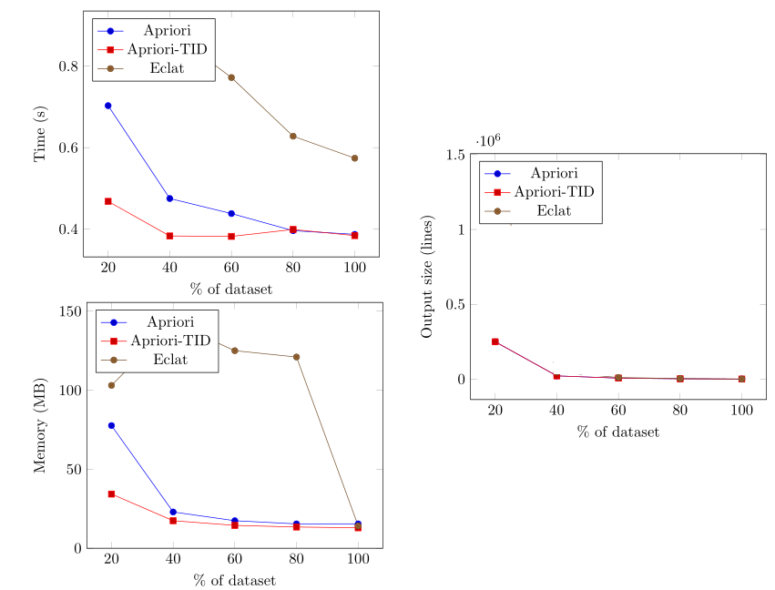
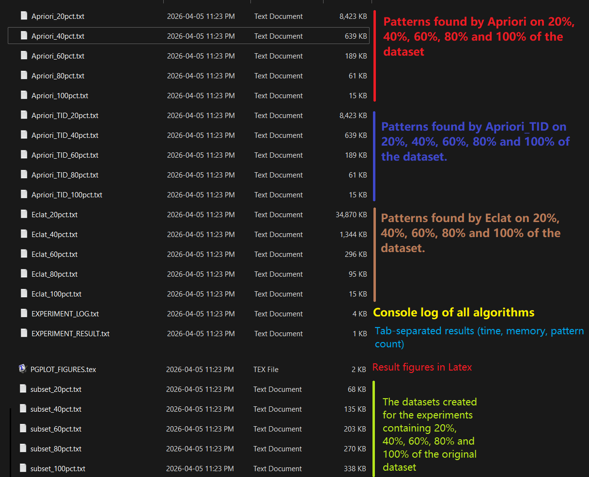

Run experiments to compare the scalability of one or more algorithms on a dataset (dataset size is varied) (SPMF documentation)
This example explains how to to use the ExperimenterForScalability tool of SPMF, which allows to compare the performance of one or more algorithms on a dataset where the size is varied and all input parameters are fixed, so as to study the effect of dataset size on runtime, memory and number of patterns..
This tool runs algorithms automatically and save the results to files. The results include a comparison of runtime, memory usage and output file size. These results are in a tab-separated format, which can be easily imported into Excel or other spreadsheet software to draw charts.
There is also an option to output results as PGFPlots charts that can be inserted directly in Latex documents such as research papers. This tool is was designed to speed-up the redundant task of running experiments to compare algorithms when writing research papers.
I will first explain how to use this tool from the user interface of SPMF, and then how the main functionnalities can be used from the source code version of SPMF.
How to start this tool?
To run this example, if you are using the graphical user interface of SPMF, (1) select the algorithm "Performance_experiment_scalability" and then (2) click "Run algorithm". This will open the tool, which provides a simple user interface..
Alternatively, if you want to run this tool from the source code of SPMF (e.g. in Eclipse), without using the graphical user interface of SPMF, you can execute the same tool by running the file "MainTestExperimenterForScalability", located in the package "ca.pfv.spmf.test". However, this is less user-friendly as there is no user interface. Thus, it is recommended to use the graphical user interface of SPMF.
How to use the tool?
After you run the algorithm "Performance_experiment_scalability" in the user interface of SPMF, the following window will open, which let you indicate what kind of experiments should be run.

I will explain step-by-step how to use this tool:
- Step 1: it is necessary to choose the algorithms that you want to compare. In this example, we will select a few algorithms. For this, we will click on the combo-box A) and select the algorithm "Apriori", and then click on the button B) "Add algorithm". Then, we will repeat this step to also add the algorithms "Apriori_TID", and "Eclat". It is necessary to choose at least one algorithm. Besides, it is required that all algorithms have the same number of parameters. This is because it does not make sense to compare algorithms that do not have the same parameters. In this example, we select only frequent itemset mining algorithms because they all have a same parameter called "minsup" and we want to compare the performance of those algorithms. It is to be noted that some of these algorithms also have some optional parameters but it does not matter because we will not use them for these experiments.
- Step 2: We next need to select an input file on which we will run the algorithms to compare their performance. For this, you may use any datasets that is in the SPMF format. In this example, we will use the Chess.txt dataset, which can be downloaded from the dataset page of the SPMF website. After downloading the Chess dataset, we click on the button C) to select this dataset.
- Step 3: We need to select and output directory on our computer so that the results can be saved into that directory. Here, you may create a new directory called Experiments on your computer. Then, you can click on the button D) to select that directory.
- Step 4: We need to also provide the list of parameter values to be used as default values for the experiment. If we have multiple parameters, we need to give fixed values for all the parameters and separate them by space. For this example, there is a single parameter (the minimum support), and we will set it to 0.90 (which means 90%).
- Step 5: Next in the field F) we will indicate a list of percentage indicating how many percentage of the input database will be used for the scalability experiments. For example, if we write 20 40 60 80 100 it will mean that in the experiments, the algorithms will be run first on the first 20% of the database, then on the first 40%, then on the first 60%, then on the first 80%, and finally on the whole database.
- Step 6: After that, we can set some optional parameters.
In this example, we will do as follows:
- First, we will set a time limit of 30 seconds by typing 30 in the text field G). This will ensure that the algorithms will not run for more than 30 seconds each tim (otherwise they ill be terminated). This option is useful to ensure that the experiments do not take too much time.
- Second, we will click the checkbox I). This checkbox will make SPMF count the number of lines in the output of each algorithm. In other word, this will count the number of patterns generated by each algorithm in this example. If we don't check this option, the tool will only compare the memory usage and runtime. But by clicking this option, we have an additional comparison, which is the number of lines (patterns).
- Third, we will click the checkbox J) to also save the results as a PGFPlot that we can insert in Latex documents.
- By the way, there is also an option H). This option allows to use a specific version of the JAR file of SPMF (spmf.jar) for running the experiments. For this example, it is not necessary to do that. This option is mainly intended for debugging (for the developers of SPMF).
If you have followed the above instructions, the window will look like this:

Then, we can click on the "Run the experiment" button K) to start the experiments!
During the experiments, the status of experiments will be displayed in the text area L) as follows:

And finally, when all experiments are done, the results of the experiments will be displayed in the text area L). The results will look like this (exact values will vary):
********************************************
***** RESULTS *****
********************************************
INPUT FILE: D:\SPMF_ALL\SPMF 6\NEW TEST FILES 2020\NEW TEST FILES\chess.txt (the input file)
PARAMETERS: [0.4] (the parameter(s) used in this experiment)
TIME (S)
% of dataset 20% 40% 60% 80% 100%
Apriori 0.7 0.47 0.44 0.4 0.39
Apriori_TID 0.47 0.38 0.38 0.4 0.38
Eclat 0.86 0.89 0.77 0.63 0.57(The above lines provide the results for the runtime comparison. The first line is the percentages of the dataset used for each experiment. The second line is the runtimes in seconds for Apriori when it is run on these subsets of the dataset (the first 20% of the dataset, the first 40%, the first 60%, the first 80%, and the whole database).. The following lines show the runtimes for the other algorithms, namely Apriori_TID, and Eclat. For example, the second line means that Apriori took 0.7 seconds when 20% of the dataset was used, and Apriori took 0.0.47 seconds when 40% of the dataset was used, etc.)
MEMORY (MB)
% of dataset 20% 40% 60% 80% 100%
Apriori 77.64 22.96 17.44 15.44 15.44
Apriori_TID 34.31 17.44 14.48 13.44 12.96
Eclat 103.06 142.57 125.01 121 14.19(The above lines provide the results for the memory comparison. The first line is the percentages of the dataset used for each experiment. The second line is the maximum memory usage for Apriori for these parameter values. The following lines show the maximum memory usage for the other algorithms, namely Apriori_TID and Eclat. For example, the second line means that Apriori used 77.64 megabytes of memory when it was run on 20% of the dataset, and Apriori took also 22.96 megabytes of memory when it was run on 40% of the dataset, etc.)
OUTPUT_SIZE (LINES)
% of dataset 20% 40% 60% 80% 100%
Apriori 249855 21791 6815 2359 622
Apriori_TID 249855 21791 6815 2359 622
Eclat 249855 21791 6815 2359 622(The above lines compares the output size of the algorithms when the algorithms are run on the different subsets of the dataset. The first line is the percentages of the dataset used for each experiment. The second line is the output size (here, number of patterns) for Apriori for these parameter values. The following lines show the output sizes for the other algorithms, namely Apriori_TID and Eclat.
All the above results are also saved in a file called EXPERIMENT_RESULT.txt in the output directory.
Importing the results into Excel
The results from the file EXPERIMENT_RESULT.txt are tab-separated. This means that they can be easily imported into Excel to create charts. For this, just copy the above results into Excel. For example, here we copy the runtime results from a different experiments (just for illustrative purpose of the process

Then, we can select these results to generate charts:

As can be seen in this picture, this chart is not perfect. In particular, the X axis is incorrect. This can be fixed by right-clicking on the chart in Excel and choosing "Select data" to set up the X axis properly. Besides, it is possible to adjust other aspects of the chart to make it look more pretty.
Importing the results into a Latex document
If you have selected the option to generate a latex file with PGFplot, a file called PGPLOT_FIGURES.tex will have been created in the output directory. This file can be compiled using Latex to generate charts, which can also be included in latex documents.
The chart for the above example may look more or less like this, depending on the results:

The Result Files
After running experiments, a set of files are created in the output directory. Here is an overview of those files.
- EXPERIMENT_RESULT.txt : contains the main results from the experiments in a tab-separated format
- PGPLOT_FIGURES.txt : contains the latex charts for the experiment (if you have selected the option of generating PGFPlots figures)
- EXPERIMENT_LOG.txt : This files contains a detailed log about all the experiments that have been run. This is useful if you want to find more information about the experiments besides the main results.
- other files: The output of each algorithm for each experiment is saved in a distinct file. For example, in the above example, a file Apriori_0.80.txt contains the results of the Apriori algorithm when it is run with minsup = 0.8, another file Apriori_0.81.txt contains the results of the Apriori algorithm when it is run with minsup = 0.81, and so on.
Here is an overview of all the files created in the output directory for this example:

How to run experiments from the source code of SPMF?
Above, I have explained how to use the graphical interface of SPMF to run automated performance experiments. I will now explain how the same functionnality can be used from the source code of SPMF. This is suited for those who are familiar with Java and wish for example to run experiments without passing through the graphical user interface of SPMF.
There is an example of how to do this, in the SPMF source code. It is the file MainTestExperimenterScalability, which is located in the package ca.pfv.spmf.experiments.scalability of SPMF.
The main code from that example is shown below. In that example, we will run a performance comparison of two algorithms from SPMF called "Eclat" and "Apriori. The input file is the file "ContextPasquier99.txt", which is located in the same folder, and results of the experiments will be saved in a new folder called "EXPERIMENTS". To run the experiments, we indicate a path to the file spmf.jar on the local computer. This is because we will be calling the spmf.jar file to run the algorithms.. In this example, we assume that spmf.jar has been downloaded to the computer and saved in C://Users//Phil/Desktop/spmf.jar but other location could work as well.
We will also indicate that there are one parameters for those algorithms and that the value will be 0.4, and that the algorithm will be run on 20, 40, 60, 80, and 100% of the database. We will also indicate that each algorithm cannot run for more than 120000s (two minutes). We can also set additional options such as to generate PGFPlots figures to be used with Latex.
The important part of the code for this example is below: ;
// ── 1. Algorithms to compare ───────────────────────────────── String[] algorithmNames = new String[] { "Eclat", "Apriori" }; // ── 2. Fixed algorithm parameters ──────────────────────────── // These are passed unchanged to every algorithm on every run. String[] fixedParams = new String[] { "0.4"}; // ── 3. Single input dataset ─────────────────────────────────── // The experimenter reads this file and creates subsets. String inputFile = fileToPath("contextPasquier99.txt"); // ── 4. Subset sizes as percentages ─────────────────────────── // Each value must be an integer between 1 and 100. // The experimenter will run algorithms on the first 20%, // then the first 40%, ..., then the full 100% of the data. String[] percentages = new String[] { "20", "40", "60", "80", "100" }; // ── 5. Output directory ─────────────────────────────────────── String outputDirectory = "SCALABILITY_EXPERIMENTS"; // ── 6. Timeout per run (milliseconds) ──────────────────────── int timeoutInMilliseconds = 120000; // 2 minutes // ── 7. Options ──────────────────────────────────────────────── boolean compareOutputSizes = true; boolean showCommand = false; boolean generateLatexFigures = true; // ── 8. Create the experimenter and run ──────────────────────── ExperimenterForScalability experimenter = new ExperimenterForScalability(); // Adjust to the actual location of spmf.jar on your machine experimenter.setSPMFJarFilePath( "C:\\Users\\Phil\\Desktop\\spmf.jar"); // String used in result tables when a run times out experimenter.setTimeoutCodeS("-"); // Run — this is the only method you need to call experimenter.runScalabilityExperiment( algorithmNames, fixedParams, inputFile, percentages, outputDirectory, timeoutInMilliseconds, compareOutputSizes, showCommand, generateLatexFigures);
If we run this example, the output in the console will be like this:
************************************************** ***** RUNNING SCALABILITY EXPERIMENTS ***** ************************************************** INPUT FILE : /D:/workspace/spmf/bin/ca/pfv/spmf/experiments/scalability/contextPasquier99.txt TOTAL DATA LINES : 5 OUTPUT DIRECTORY : SCALABILITY_EXPERIMENTS ALGORITHMS : [Eclat, Apriori] FIXED PARAMETERS : [0.4] PERCENTAGES : [20, 40, 60, 80, 100] Subset 20% -> 1 lines -> SCALABILITY_EXPERIMENTS\subset_20pct.txt ***** EXPERIMENT 1 ALGORITHM : Eclat SUBSET : 20% (1 lines) COMMAND: java C:\Users\Phil\Desktop\sbmf.jar run Eclat SCALABILITY_EXPERIMENTS\subset_20pct.txt SCALABILITY_EXPERIMENTS\Eclat_20pct.txt 0.4 TIME: 0.33 s MEMORY: 11.94 MB OUTPUT SIZE: 7 lines ***** EXPERIMENT 2 ALGORITHM : Apriori SUBSET : 20% (1 lines) COMMAND: java C:\Users\Phil\Desktop\sbmf.jar run Apriori SCALABILITY_EXPERIMENTS\subset_20pct.txt SCALABILITY_EXPERIMENTS\Apriori_20pct.txt 0.4 TIME: 0.3 s MEMORY: 12.48 MB OUTPUT SIZE: 7 lines Subset 40% -> 2 lines -> SCALABILITY_EXPERIMENTS\subset_40pct.txt ***** EXPERIMENT 3 ALGORITHM : Eclat SUBSET : 40% (2 lines) COMMAND: java C:\Users\Phil\Desktop\sbmf.jar run Eclat SCALABILITY_EXPERIMENTS\subset_40pct.txt SCALABILITY_EXPERIMENTS\Eclat_40pct.txt 0.4 TIME: 0.3 s MEMORY: 11.94 MB OUTPUT SIZE: 13 lines ***** EXPERIMENT 4 ALGORITHM : Apriori SUBSET : 40% (2 lines) COMMAND: java C:\Users\Phil\Desktop\sbmf.jar run Apriori SCALABILITY_EXPERIMENTS\subset_40pct.txt SCALABILITY_EXPERIMENTS\Apriori_40pct.txt 0.4 TIME: 0.3 s MEMORY: 12.48 MB OUTPUT SIZE: 13 lines Subset 60% -> 3 lines -> SCALABILITY_EXPERIMENTS\subset_60pct.txt ***** EXPERIMENT 5 ALGORITHM : Eclat SUBSET : 60% (3 lines) COMMAND: java C:\Users\Phil\Desktop\sbmf.jar run Eclat SCALABILITY_EXPERIMENTS\subset_60pct.txt SCALABILITY_EXPERIMENTS\Eclat_60pct.txt 0.4 TIME: 0.29 s MEMORY: 11.94 MB OUTPUT SIZE: 9 lines ***** EXPERIMENT 6 ALGORITHM : Apriori SUBSET : 60% (3 lines) COMMAND: java C:\Users\Phil\Desktop\sbmf.jar run Apriori SCALABILITY_EXPERIMENTS\subset_60pct.txt SCALABILITY_EXPERIMENTS\Apriori_60pct.txt 0.4 TIME: 0.3 s MEMORY: 12.48 MB OUTPUT SIZE: 9 lines Subset 80% -> 4 lines -> SCALABILITY_EXPERIMENTS\subset_80pct.txt ***** EXPERIMENT 7 ALGORITHM : Eclat SUBSET : 80% (4 lines) COMMAND: java C:\Users\Phil\Desktop\sbmf.jar run Eclat SCALABILITY_EXPERIMENTS\subset_80pct.txt SCALABILITY_EXPERIMENTS\Eclat_80pct.txt 0.4 TIME: 0.29 s MEMORY: 11.94 MB OUTPUT SIZE: 9 lines ***** EXPERIMENT 8 ALGORITHM : Apriori SUBSET : 80% (4 lines) COMMAND: java C:\Users\Phil\Desktop\sbmf.jar run Apriori SCALABILITY_EXPERIMENTS\subset_80pct.txt SCALABILITY_EXPERIMENTS\Apriori_80pct.txt 0.4 TIME: 0.29 s MEMORY: 12.48 MB OUTPUT SIZE: 9 lines Subset 100% -> 5 lines -> SCALABILITY_EXPERIMENTS\subset_100pct.txt ***** EXPERIMENT 9 ALGORITHM : Eclat SUBSET : 100% (5 lines) COMMAND: java C:\Users\Phil\Desktop\sbmf.jar run Eclat SCALABILITY_EXPERIMENTS\subset_100pct.txt SCALABILITY_EXPERIMENTS\Eclat_100pct.txt 0.4 TIME: 0.31 s MEMORY: 11.94 MB OUTPUT SIZE: 15 lines ***** EXPERIMENT 10 ALGORITHM : Apriori SUBSET : 100% (5 lines) COMMAND: java C:\Users\Phil\Desktop\sbmf.jar run Apriori SCALABILITY_EXPERIMENTS\subset_100pct.txt SCALABILITY_EXPERIMENTS\Apriori_100pct.txt 0.4 TIME: 0.36 s MEMORY: 12.48 MB OUTPUT SIZE: 15 lines ************************************************** ***** RESULTS ***** ************************************************** SCALABILITY EXPERIMENT RESULTS INPUT FILE: /D:/workspace/spmf/bin/ca/pfv/spmf/experiments/scalability/contextPasquier99.txt FIXED PARAMETERS: [0.4] TIME (S) % of dataset 20% 40% 60% 80% 100% Eclat 0.33 0.3 0.29 0.29 0.31 Apriori 0.3 0.3 0.3 0.29 0.36 MEMORY (MB) % of dataset 20% 40% 60% 80% 100% Eclat 11.94 11.94 11.94 11.94 11.94 Apriori 12.48 12.48 12.48 12.48 12.48 OUTPUT_SIZE (LINES) % of dataset 20% 40% 60% 80% 100% Eclat 7 13 9 9 15 Apriori 7 13 9 9 15 LaTeX figures written to: SCALABILITY_EXPERIMENTS\PGPLOT_FIGURES.tex
If we want we can copy the above results in green color to Excel for generating charts from these results.
Besides, in the EXPERIMENTS/ directory that will have been created, we can find the detailed results in files, including figures to be used in Latex.
Now, having said that an interesting question is : What if I want to test some algorithms that are not in SPMF.jar ? At this moment, the tool is only designed to compare algorithms from SPMF.jar but it is not difficult to add new algorithms to SPMF.Jar. I will try to add more explanations about this in the future.